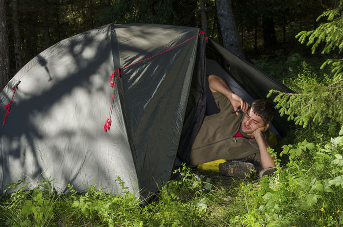

Name:
Tony Panthera.. Not to be confused with Pantera
Age:
26
Occupation:
Part-time Student
Bartender at night
Technology:
Tony has an Iphone Pro and enjoys being on social media any chance he gets.
He doesn't know how to use a map, so he relys on google maps on his Iphone
He has an HP laptop which is used for school and for home use, majority of his
searches are done on the IPhone.
Attitude:
He enjoys being in the City but want's to get outdoors more
Needs/Goals/Features:
Tony is new to the outdoors and doesn't know what
National Parks are in NM, more or less out of the State.
He want's to see what activities he can do while in the outdoors.
He's always wanted to try fishing
He wants to be able to go hiking or possibly biking.
Whereever he goes, he will need cell phone service, restrooms and a campground.
He wants to find places in his State and all over the country.
Frustrations:
He doesn't like to go to all these different websites for each National Park.
He can't find all the ammentities that he needs.
How can he find contact information for the Rangers in each area.